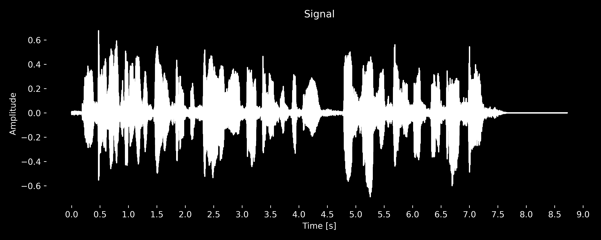

This page shows the results of experiments with F5-TTS models - one trained using English data, the second one using the Czech ones.
For the English model, first, the sample files generated during training are presented.
Next, the results of the experiments are shown. After providing reference audio files, the specifics of the experiments are described.
Experiments were conducted on 4 speakers - 2 seen and 2 unseen.
The second part of the page is dedicated to the Czech model. The same structure is used as in the first part.
In addition, more experiments were conducted on the Czech model, which are described in detail in the corresponding section.
Sample audio files generated while training the model. Details about training can be found in config.
| 100k | 300k | 1M | 1.6M |
|---|---|---|---|
In total 4 speakers were used in the experiments - 2 seen and 2 unseen. Each recording is approximately of the same length with silence at the end. All recordings are sampled at 24 kHz and their loudness is normalized.
| Seen M | Seen F | Unseen M | Unseen F |
|---|---|---|---|
| Experiment | Description |
|---|---|
| 1 | No modifications, sentence-by-sentence generation. |
| 2 | Word-by-word generation, recordings concatenated after generating all words. |
| 3 | Word-by-word generation, recordings concatenated after generating all words. Additionally, the generation of a new word is conditioned on the previous word (inserted as reference). |
| 4 | Two-word generation with added silence (100 ms) at the end of the generated recording. Recordings concatenated after generating all words. |
| 5 | Using Dynamic Time Warping (DTW): gradually inserting larger and larger segments of text, then trimming the generated recording and selecting only the last word. |
The results show that the model can generate full sentences with good quality, both for seen and unseen speakers.
Generating by individual words is very poor, mainly because the model struggles to generate short words properly.
Conditioning the generation on the previously generated recording didn’t help much either, because the model has trouble with shorter segments.
Once one word is generated incorrectly, the error spreads.
When the model has a larger context (two words), it performs much better.
Finally, the most hardware-intensive option, using DTW, currently works the best.
Reference sentence: His days and works and thoughts could make no atonement for him, the fountains of sanctifying grace having ceased to refresh his soul.
Seen M
| Exp. 1 | Exp. 2 | Exp. 3 | Exp. 4 | Exp. 5 |
|---|---|---|---|---|
Seen F
Unseen M
Unseen F
Overview of details for each experiment is provided in the table below. TBD
Reference audio files are still the same as in the case of Experiments I.
Reference sentence: The vast cycle of starry life bore his weary mind outward to its verge and inward to its centre, a distant music accompanying him outward and inward.
| Experiment | Description |
|---|---|
| 1 | Enhanced DTW variant: in comparison to the previous experiment, this version applies fade in & out to the generated audio chunks, also applies silence in between the chunks. The first chunk is generated with a fix_duration to ensure proper audio generation. Using VAD to ensure that newly generated part contains only 1 word did not improve the results and it is not used. |
| 2 | Same as experiment 1, however, instead of using DTW, Whisper-timestamped is utilized. Timestamps are used for cutting the newly generated part. |
| 3 | Dynamic sized chunk: the generation is not done per fixed chunk size, but rather per minimum number of characters.
In this case, the chunk size is set to 10 character. |
| 4 | Fixed duration per chunk size = 1: to ensure that generated audio has proper duration and it is comprehensible,
the fix_duration is set dynamically based on the number of characters in the text to generate. |
| 5 | Fixed duration per chunk size = 1 with silence removed from the final audio. |
| 6 | Fixed duration per chunk size = 3, same as experiment 4. |
| 7 | Fixed duration per chunk size = 3 with silence removed from the final audio. |
| 8 | Accumulated audio generation: each generation audio is appended to the reference audio.
Once the reference audio is too long, original audio is removed and only generated audio is used as reference. However, conditioning on the generated audio produces low quality results. |
| 9 | Accumulated audio generation with silence removed from the final audio. |
| 10 | Using Whisper timestamps to generate the audio.
Generated word is trimmed at the end based on Whisper timestamps of the word. (Idea is that the model would generate the previous word ending and generate the next word - this could lead to better intertwining of the words.) The trimmed word is present after the original reference text (only this one word). |
| 11 | Using Whisper timestamps to generate the audio, silence removed. |
| 12 |
Using VAD to guide segment trimming and alignment, reference sentence: After early nightfall, yellow lamps... . First, a single word is generated (e.g., "After"). VAD is used to identify all voiced segments, and the last one is trimmed by 50% from the end (e.g., to remove "er" from "After"). This trimmed audio is appended to the reference audio, and the generated word is added to the reference text. The next chunk is generated (e.g., "early"), and the reference portion is removed from it using timestamps, ideally leaving only the new word. The process repeats with each new chunk being aligned using trimmed voiced segments and concatenated with the previous ones. The goal is to create smooth audio transitions where the model either finishes the previous word or blends it naturally with the next one. The first variant for merging chunks into the final audio is by matching overlap with cross-correlation and trimming the beginning of the new chunk accordingly. Unfortunately, the results were not satisfactory, as the model sometimes generated previous word ending, or the whole word, or nothing at all and only the new word. |
| 13 | Using VAD to guide segment trimming and alignment, variant 2 of processing the final audio
by pairing the trimmed voiced segment with the new chunk (e.g., "Aft" + "er early") and detecting overlaps between pairs before concatenation. Again, the results were not satisfactory. |
Seen M
| Exp. 1 | Exp. 2 | Exp. 3 | Exp. 4 | Exp. 5 |
|---|---|---|---|---|
| Exp. 6 | Exp. 7 | Exp. 8 | Exp. 9 | Exp. 10 |
|---|---|---|---|---|
| Exp. 11 | Exp. 12 | Exp. 13 |
|---|---|---|
Additional model with causal mask used in the attention mechanism was trained on the same data. Unfortunately, the results did not improve, thus, the examples are not presented here either.
Sample audio files generated manually on a same sentence after training the model.
Details about training can be found in config.
| Original | 100k | 1M | 3M | 7M |
|---|---|---|---|---|
In total 4 speakers were used in the experiments - 2 seen and 2 unseen. Each recording is approximately of the same length with silence at the end. All recordings are sampled at 24 kHz and their loudness is normalized.
| Seen M | Seen F | Unseen M | Unseen F |
|---|---|---|---|
Experiments were identical to the ones conducted on the English model.
The interpretation of the results is similar to the English model.
Reference sentence: Já jsem ty otázky pokládal, protože tady do jisté míry měníte koncepci, která byla.
Seen M
| Exp. 1 | Exp. 2 | Exp. 3 | Exp. 4 | Exp. 5 |
|---|---|---|---|---|
Seen F
Unseen M
Unseen F
As a reference audio, same sentence of a seen male speaker was used.
This experiment explores the model's ability to generate word jednoduchá with different inference settings. Overview of details for each experiment is provided in the table below.
| Experiment | Description |
|---|---|
| 1 | Default inference settings, word jednoduchá without any other modifications. |
| 2 | Default inference settings, word jednoduchá. with a dot at the end. |
| 3 | Default inference settings, word jednoduchá . with a space and dot at the end. |
| 4 | Default inference settings, word jednoduchá .. with space and 2 dots at the end. |
| 5 | Default inference settings, word jednoduchá, with a comma. |
| 6 | Default inference settings, word jednoduchá, with a comma and space after it. |
| 7 | Flag speed=0.9, word jednoduchá . with a space and dot at the end. |
| 8 | Flag nfe_step=16 (default is 32), word jednoduchá . with a space and dot at the end. |
| 9 | Flag cfg_strength=4 (default is 2), word jednoduchá . with a space and dot at the end. |
| 10 | Flag fix_duration=8.3 (given 8-second long reference), word jednoduchá . with a space and dot at the end. |
| Exp. 1 | Exp. 2 | Exp. 3 | Exp. 4 |
|---|---|---|---|
| Exp. 5 | Exp. 6 | Exp. 7 | Exp. 8 |
|---|---|---|---|
| Exp. 9 | Exp. 10 |
|---|---|
Based on these experiments, it can be concluded that the model is very sensitive to the punctuation marks and spaces at the end of the word. To introduce a pause, it is a good practice to add a space and a dot at the end of the word.
This experiment explores the model's ability to generate sentence Takže my samozřejmě čelíme vždycky kritice, ale my zkrátka nejsme schopni to zvládnout sami bez spolupráce. with different inference settings. Reference sentence is almost identical (only word takže is added). Duration of the reference audio is 8.5 seconds. Overview of details for each experiment is provided in the table below.
| Experiment | Description |
|---|---|
| 1 | Default inference settings, sentence provided without any other modifications. |
| 2 | Flag speed=0.9, sentence provided without any other modifications. |
| 3 | Flag fix_duration=6, sentence provided without any other modifications. |
| 4 | Flag fix_duration=30, sentence provided without any other modifications. |
| 5 | Flag fix_duration=15, sentence provided without any other modifications. |
| 6 | Flag fix_duration=10, sentence provided without any other modifications. |
| 7 | Flag fix_duration=10, sentence was cut, Takže my samozřejmě . was the text to generate. |
| 8 | Flag fix_duration=5, sentence was cut, Takže . was the text to generate. |
| 9 | Flag fix_duration=5, sentence was cut, Takže . was the text to generate. This only compares different model's outputs for identical inputs. |
| 10 | Flag fix_duration=10, sentence was cut, Takže . was the text to generate. |
| 11 | Flag fix_duration=8, sentence was cut, Takže . was the text to generate. |
| 12 | Flag fix_duration=9, sentence was cut, Takže . was the text to generate. |
| 13 | Flag fix_duration=7, sentence was cut, Takže . was the text to generate. |
| 14 | Flag fix_duration=8.5, sentence was cut, Takže . was the text to generate. |
| 15 | Default inference settings, sentence was cut, Takže . was the text to generate. |
| 16 | Flag fix_duration=8.75, sentence was cut, Takže . was the text to generate. |
| 17 | Flag fix_duration=7.5, sentence was cut, Takže . was the text to generate. |
| Exp. 1 | Exp. 2 | Exp. 3 | Exp. 4 |
|---|---|---|---|
| Exp. 5 | Exp. 6 | Exp. 7 | Exp. 8 |
|---|---|---|---|
| Exp. 9 | Exp. 10 | Exp. 11 | Exp. 12 |
|---|---|---|---|
| Exp. 13 | Exp. 14 | Exp. 15 | Exp. 16 |
|---|---|---|---|
| Exp. 17 |
|---|
This experiment explores the model's ability to generate words from sentence Toto je jednoduchá česká věta. with various inference settings per word. Reference sentence is still the same and its duration is 8.5 seconds. Overview of details for each experiment is provided in the table below.
| Experiment | Description |
|---|---|
| 1 | Flag fix_duration=8, Toto . was the text to generate. |
| 2 | Flag fix_duration=8, je . was the text to generate. |
| 3 | Flag fix_duration=8.3, jednoduchá . was the text to generate. |
| 4 | Flag fix_duration=8, česká . was the text to generate. |
| 5 | Flag fix_duration=8, věta . was the text to generate. |
| Exp. 1 | Exp. 2 | Exp. 3 | Exp. 4 |
|---|---|---|---|
| Exp. 5 |
|---|
To further analyze the reference audio, we can have a look at the signal in time domain to see that speech ends at around 7.5 seconds. The rest is silence.
Based on this information, we can generate a sentence word-by-word with dynamic duration per word. The duration is calculated based on the reference audio length and number of characters of the word to generate.